Bin There Dump That Franchise Site
Everything you need to manage and update your WordPress website, prepared for you by Kick Point.
Logging In to WordPress
To access your staging admin, go to: https://btdtfranchstg.wpenginepowered.com/wp-admin/
For the live site, log in at: https://bintheredumpthatfranchise.com/
Adding/Editing Content: Basics
Editing Existing Content
Pages are found under Pages or Posts in the left-hand sidebar navigation.

Getting to the Editing View
Navigate to the correct section and find your page by scrolling or using the search bar. Click the page title to open the editing view, or hover over it and click Edit.
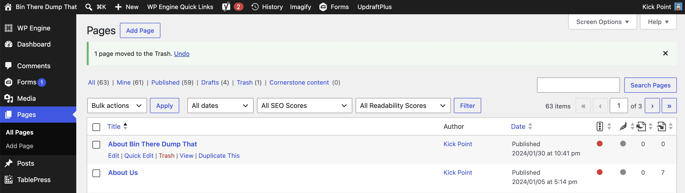
Adding a New Page
Head to the appropriate section (Pages or Posts) and click the small Add New button beside the section title.
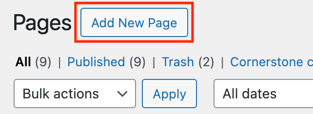
Adding a Blog Post
Same process as above. Head to the Posts section and click the small Add New button beside the section title.
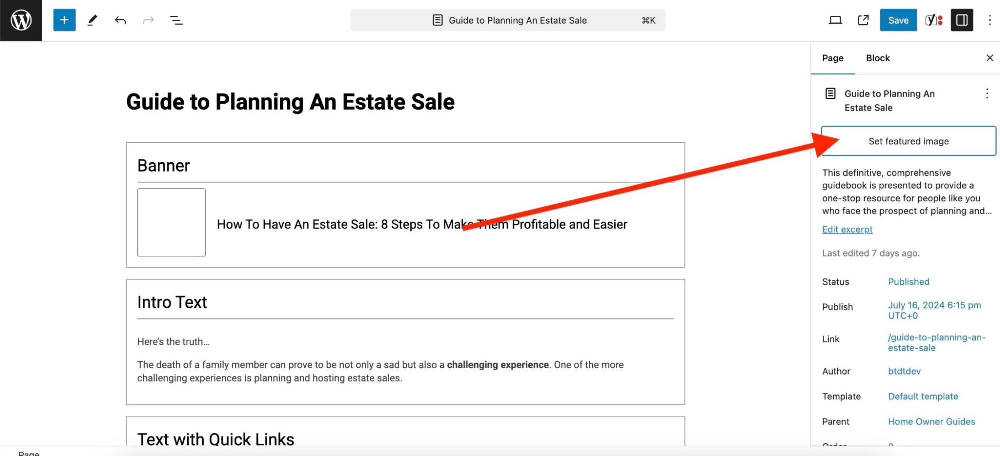
Blog Post Categories
Categories keep posts organized and easy to navigate.
Adding a New Category
- Go to Posts → Categories in WP-Admin.
- Enter a Name (how it appears on the site) and Slug (URL-friendly version — auto-generated if left blank).
- Optionally set a Parent Category for subcategories.
- Click Add New Category.
Setting a Default Category
Go to Settings → Writing and select the Default Post Category from the dropdown. All new posts are automatically assigned this category.
Assigning a Category to a Post
- Open the post, then open the post settings sidebar.
- Scroll to Categories and check the box next to the category you want.
- Click Save.
Titles vs. Permalinks
When you create a page, WordPress auto-generates a permalink (slug) from the title. Once set, the permalink stays the same even if you change the title — meaning the two can differ intentionally.
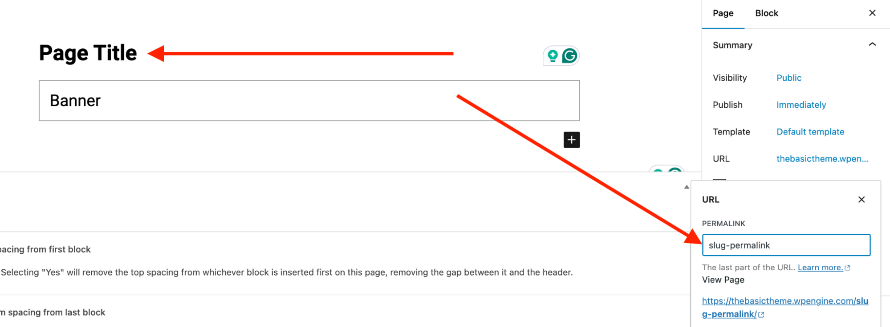
Example: the URL is kickpoint.ca/newsletter/ while the page title reads A Newsletter You'll Actually Read.
Saving Your Work
At the top of the right of the screen for all new or in-progress pages and posts, you will see three options: Save Draft, Preview, and Publish.
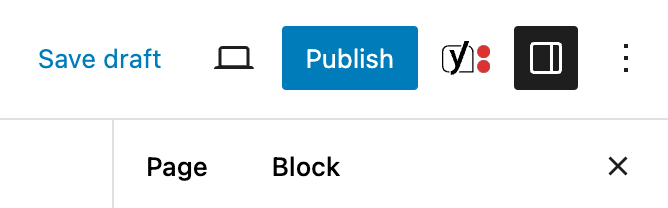
Save Draft
Saves your content without publishing it. Use this to save progress or return to a page later.
Publish
Saves and makes your content live. Visibility options:
- Public — live to all visitors (default)
- Private — visible only to admin-level users
- Password protected — requires a password to view
You can set a publish date in the past (backdate) or schedule for the future. After the first publish, this button changes to Update.
Preview
Opens a new tab showing what the page would look like if published. Use this to check formatting before committing.
Templates
Set page templates in the Page Summary sidebar. For most new pages, leave the template as Default.
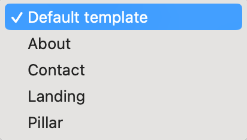
Available Templates
- Default — Most flexible; use for the majority of pages. Automatically adds a banner block.
- About — Same as Default, plus About page schema and an intro text block below the banner.
- Contact — Shows contact info on the left and a contact form on the right. (Please note: your current contact page uses the default template)
- Landing — For Google Ads landing pages. Removes the main navigation menu.
- Pillar — Adds a sticky sidebar table of contents for long-form content.
Adding a Pillar Page
The Pillar template creates a sticky sidebar table of contents.
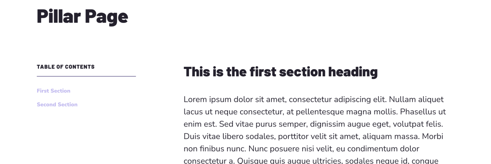
To build one:
- Add a Section Heading block — this text appears as a link in the sidebar TOC.
- Add content blocks below it as needed.
- Repeat for each new section.
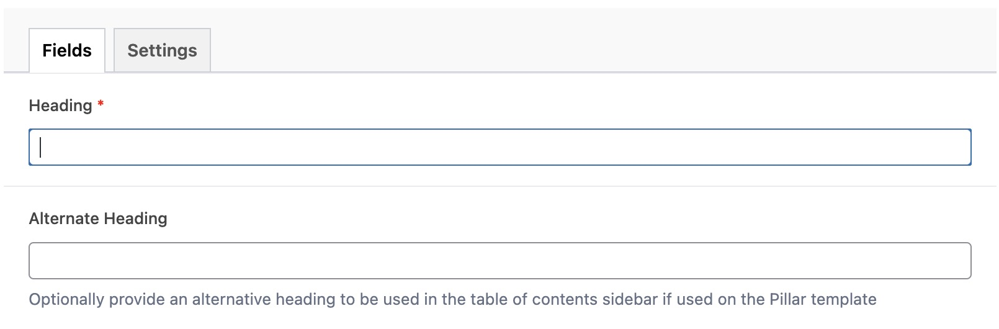
Setting a Parent Page
Setting a parent page establishes a hierarchy — for example, About Us as parent and Our Team as a child page. Set this in the Page Attributes sidebar.
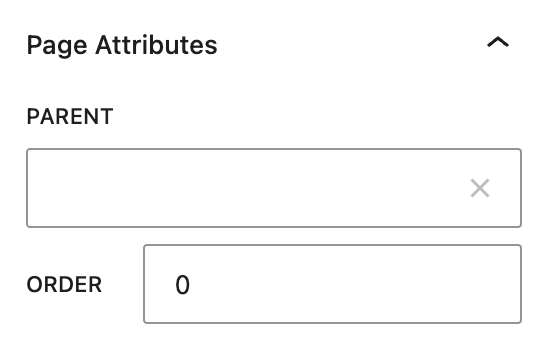
Setting a Parent Page helps establish a page hierarchy on your site by grouping pages together under a single ‘top-level’ page to organize your website. This usually corresponds to how you want the page to appear in the website’s navigation menu.
To set a Parent Page, select the appropriate page from the Parent drop menu. If you do not, your page will default to having no parent, which means it will be treated as a ‘top-level’ page by WordPress.
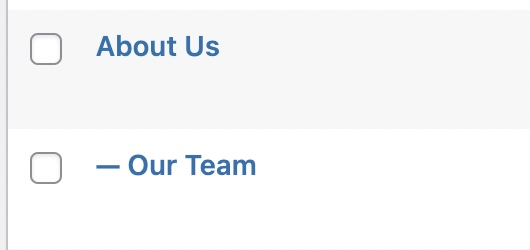
Adding SEO to a Post or Page
Your site uses Yoast SEO. Most settings are pre-configured, but you should add a custom SEO title and meta description to every new page.
Snippet Editor
Click Edit snippet in the Yoast box to set a custom SEO title and meta description — these control how the page appears in Google and Bing search results.
Adding Social Share Images (OG Image)
Click the Social icon in the Yoast box (open triangle with dots), then click Upload Image to set a preview image for social sharing.
- Facebook: 1200 × 630 px
- X (Twitter): 1200 × 675 px
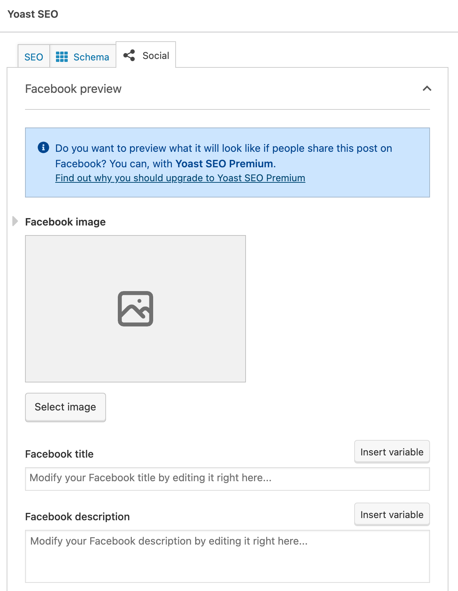
Territory Map & Hot Markets
The Available Territories page uses two separate tools: an interactive territory map plugin, and a row of “Hot Markets” buttons that link out to individual city pages.
Territory Map (USA Map Plugin)
The interactive map on the Available Territories page (bintheredumpthatfranchise.com/available-territories/) is generated by USA Map, a paid mapping plugin. It is placed on the page with a shortcode rather than a content block:
You shouldn’t need to edit this shortcode — it always points to the same saved map (ID 1). Territory boundaries, colors, and labels are managed from the USA Map plugin’s own settings screen in the WordPress admin, not from the page editor.
Hot Markets
Below the map, the Hot Markets section lists a row of buttons linking to individual city pages. Each button is added as raw HTML in the block rather than the standard button block.
Removing a city: delete that city’s button code from the Hot Markets block.
Adding a city: first create the page you want to link to, then add a new button using the code below, updating the bold placeholders with the page URL and city name:
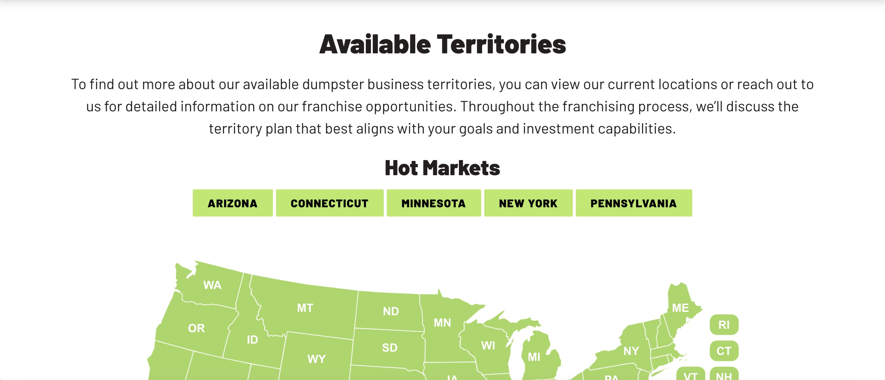
Content Block Guide
Throughout the admin, you will see “Builder” as an option in your templates. This allows you to build out pages using different content blocks. Here’s how it works:
Any page with a builder has a builder area on the page. When it’s empty, it looks like this:
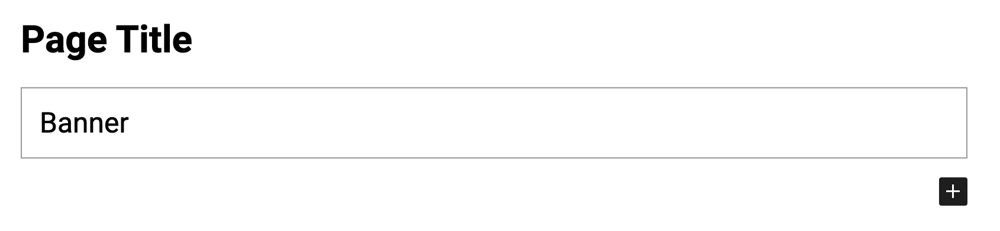
Every page starts with the banner block. This block is automatically included when you create a new page.
If a page has blocks added inside it already, it might look something like this, when the blocks are collapsed:
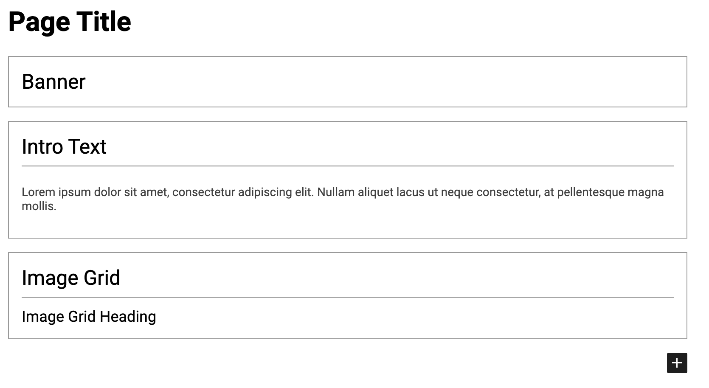
Or this, if one block is expanded:
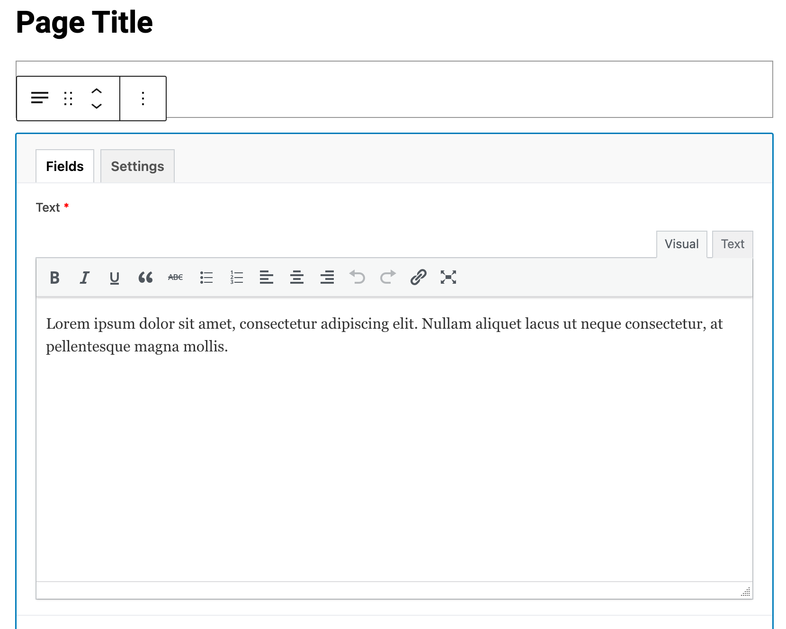
Adding a Content Block
To add new content, click the + Block Inserter OR if there are existing blocks, you can hover between the blocks to reveal another + Block Inserter (blue line in the example pictured). Alternatively, you can start typing the blank name in the blank space if you tart by typing / to search for a block and then insert it by pressing the Enter key on your keyboard.
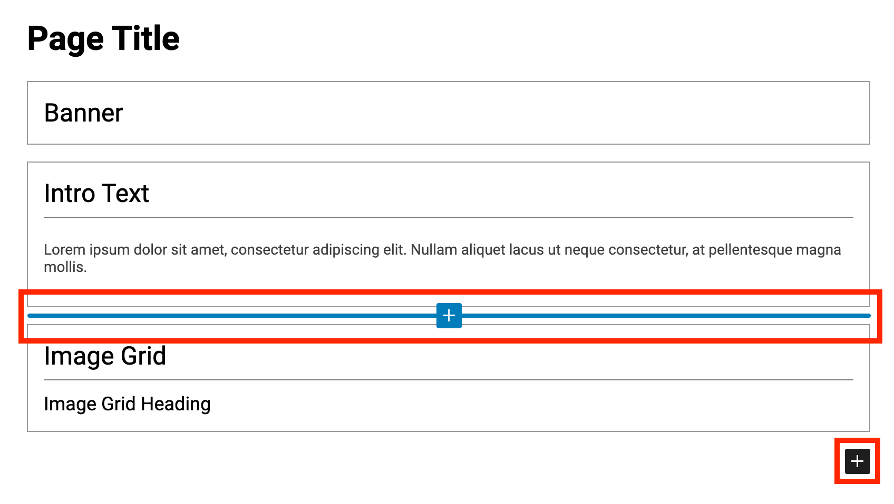
Clicking on the button will show the add block menu with a search bar on top. The most commonly used blocks will also appear.
You can type in a keyword to quickly search for a specific block. If you don’t want to use the mouse to click on the button, then you can also use a keyboard shortcut. Start by typing / to search for a block and then insert it by pressing the Enter key on your keyboard. Selecting “Browse All” will open a sidebar where you can scroll through all the block options.
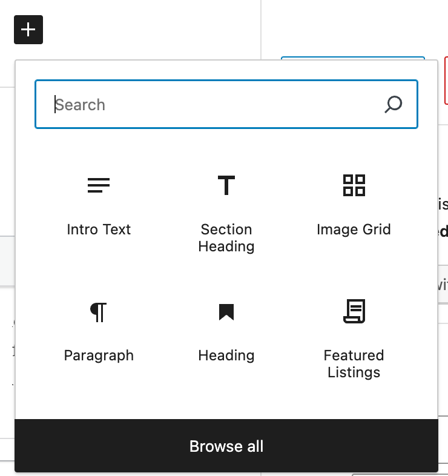
Each block comes with its toolbar that appears on top of the block. The buttons in the toolbar will change depending on the block you are editing.
Moving, Removing, or Duplicating a Content Block
To remove, duplicate, or move a content block, select the content block and a content block menu will appear.
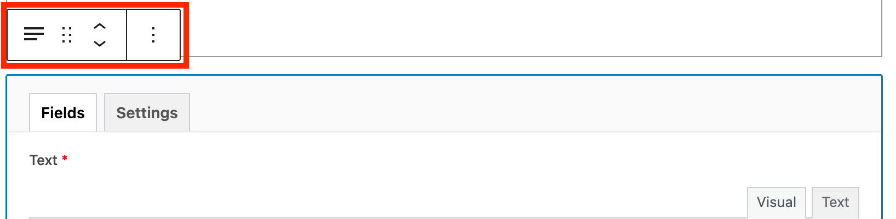
- Move a Block - To move a block, click on the up or down arrows to move the content block where you’d like it to appear. Alternatively, you can select the six dots icon () to drag and drop the content block.
- Remove or Duplicate a Block - To remove or duplicate a block, click on the three dots () to open another menu. From this menu, you can select delete or duplicate. Alternatively, you can choose to add a block before or after this content block.
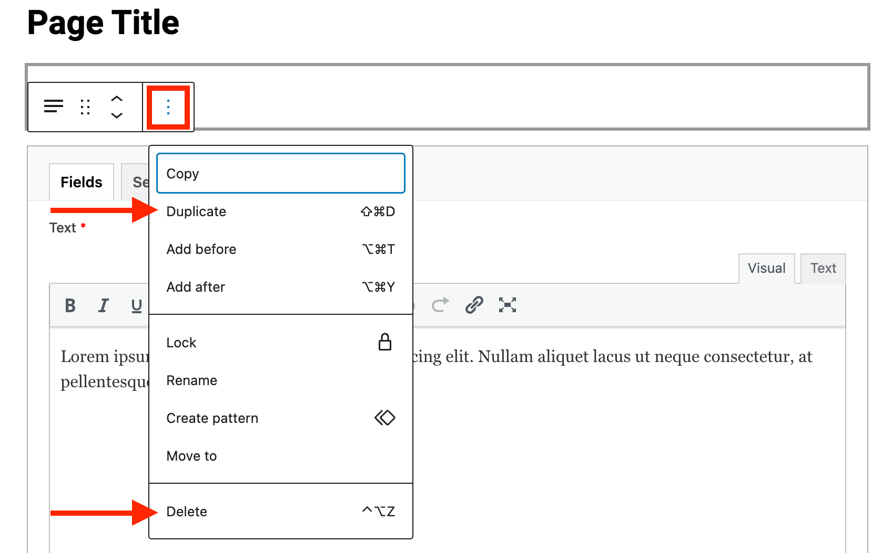
Reusable Blocks (Patterns)
Create a Reusable Block
- Select the blocks you want to reuse.
- Click the three-dot menu → Create pattern.
- Name it. Optionally assign a category.
- Choose Synced (edits propagate everywhere) or Unsynced (edits apply only to that instance).
- Click Create.
Edit a Reusable Block
Go to Appearance → Patterns, find your pattern, and click the pencil icon. Save when done — synced patterns update everywhere they're used.
Detach a Reusable Block
Select the pattern on a page → click ⋯ in the toolbar → Detach. Converts that instance to unsynced, leaving the original untouched.
The Link Pop-up
Many blocks have a "Select Link" button that opens a link pop-up. To link to a page on your site, search for it using the search box. To link externally, paste the URL directly. Always check Open link in a new tab for external links.
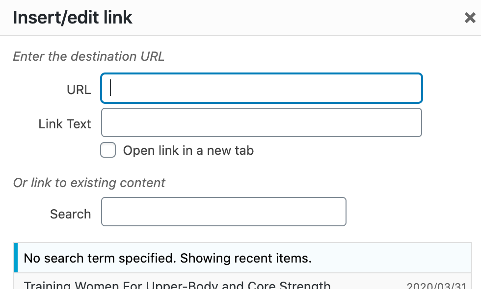
All Content Blocks
Fields marked with a red star are required. All other fields are optional.
Used for: FAQs or content that should be hidden/revealed on click.
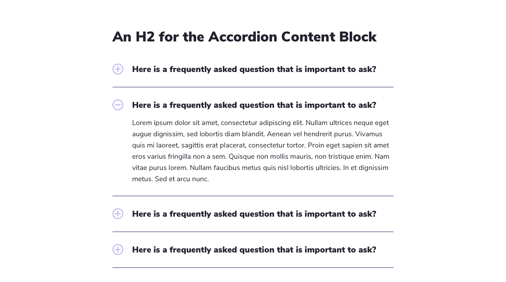
The To add more content select the “Add Row” button. To remove a row of content select the - icon to the right of the row. The text entered in the “Text” section will only show when the visitor has clicked on the text entered in the “Title” section.
You can reorder the accordion items by dragging and dropping the section you’d like to move.
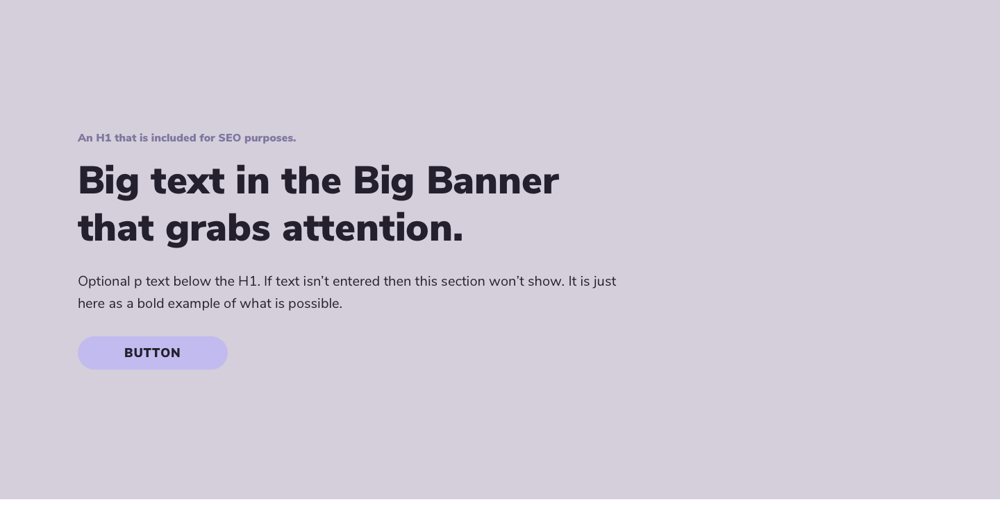
Used for: Introducing the page content.
This is the first block on every page. It's added automatically when you create a new page. You just need to edit it.
- Basic Banner — For pages where users expect to get straight to the content (e.g. Contact).
- Small Banner — For most pages. Text over a background image.
- Big Banner — Homepage and ad landing pages only. Use sparingly.
Key fields:
- Small Title — This is the small text that appears above the large text. It is optional. When in use, it becomes the H1 (Heading 1) for the page and should be written with SEO in mind.
- Big Title — This is the large text that appears below the smaller text (when used). If the small title isn’t used, this text becomes the H1 (Heading 1) and should be written with SEO in mind. If not, you’re free to make this a more marketing-focused message.
- Custom Image — If you’ve selected “big banner” or “small banner”, you’ll be asked if you want to add a custom image. If the Custom Image is toggled off, the banner will automatically display the featured image on this page/post. Toggle this on to specify a custom image.
- Image / Mobile Image - Select “Add Image” to upload an image from your computer or select an image from the media library. Wide images work better for desktops while taller images work best for mobile devices. There will automatically be a dark overlay added to your image. If you want to remove this, click on the “remove overlay” checkbox (below the rest of the fields).
- Text Colour - If you have selected a banner type with a background image, you can choose whether you’d like your text to be light or dark depending on what will show best over the image you’ve selected. If you want to use the “dark” text, you will need to remove the overlay on the image (see above).
- Text Alignment - Choose whether your text is left or centre-aligned.
- Text - When using the big banner, you have the option to add text below the H1 (Heading 1). If text isn’t entered then this section won’t show.
- Button - This option is only available when using the Big or Small banner. This adds a button to those banner blocks. Select the “Select Link” button. This will open the Link Pop-Up described above.
Used for: Displaying the current career openings.
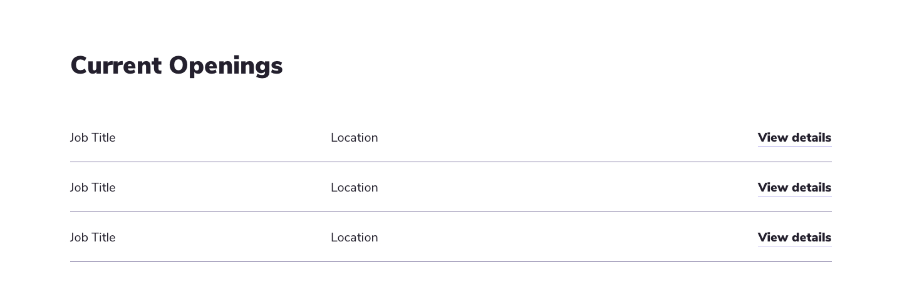
This block automatically pulls and displays the career openings. You will not be able to edit this block.
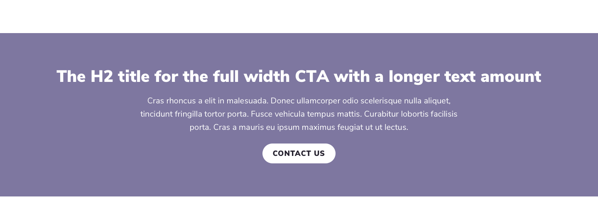
Used for: Major calls to action such as "Get In Touch."
This block uses the content editor for the heading and text field and the link pop-up for the button.
You can choose the background colour of your CTA by selecting one of the following colours from the dropdown menu: Light (Bright Green), Accent (Bright Green), Primary (Black), or Secondary (Blue).
Used for: Highlighting content and driving users to another page.
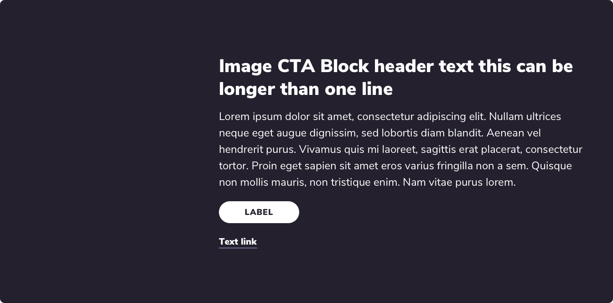
Format the text as needed, and use either one or two CTAs (the secondary CTA will always be a text link). You can also choose from different overlay colours based on your site’s colour palette: Primary (Black) or Secondary (Blue).
Used for: Adding a call to action between paragraph text.
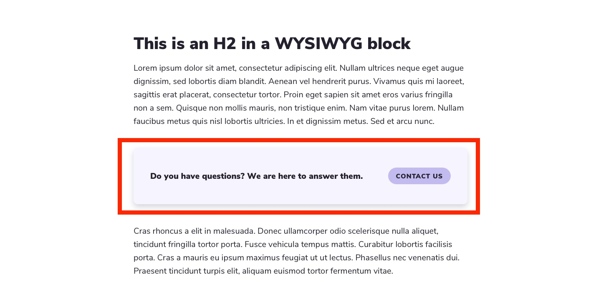
This block will add a mini CTA: only text and a button link. The mini CTA uses the content editor for the text field and the link pop-up for the button.
Used for: Highlighting key content with an image or video.
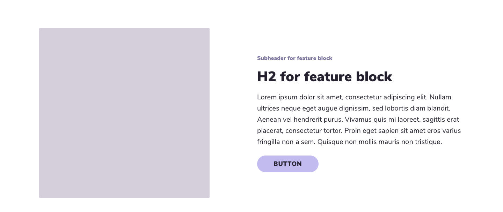
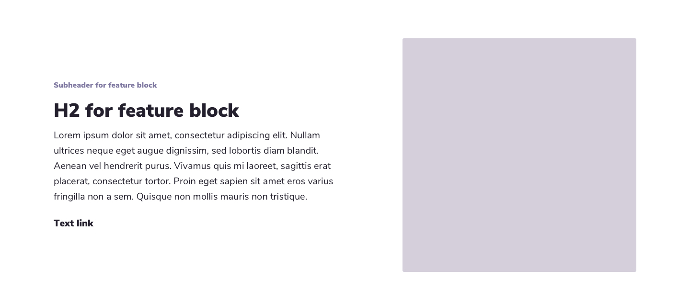
Feature Block Options:
- Add a heading or a small heading (both optional though we recommend always using a heading for this block).
- Select media type (image or video).
- If you select a video, add the video ID and the image added will be the video thumbnail.
- Select “Add Image” to upload an image from your computer or select an image from the media library.
- Align the image to the left or the right of the text.
- Select the CTA type (button or text link).
- You can add a background colour to this block by selecting “Light” from the dropdown menu.
Used for: Highlighting items from the listings section of your website.
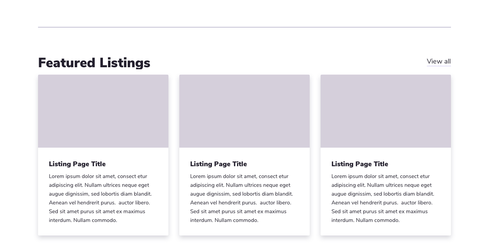
You can manually choose which listings to display by selecting “Yes” from the Manually Choose Listings dropdown menu. From there you use the dropdown menu that appears to select from a list of all your listings. Alternatively, you can type the name of the listing for it to appear from the dropdown menu.
To display your most recent posts, select “No” from the Manually Choose Listings dropdown menu. You can then choose to display either 3 or 6 of your listings. You can add a background colour to this block by selecting “Light” from the dropdown menu.
Used for: Highlighting your most important or most recent blog posts.
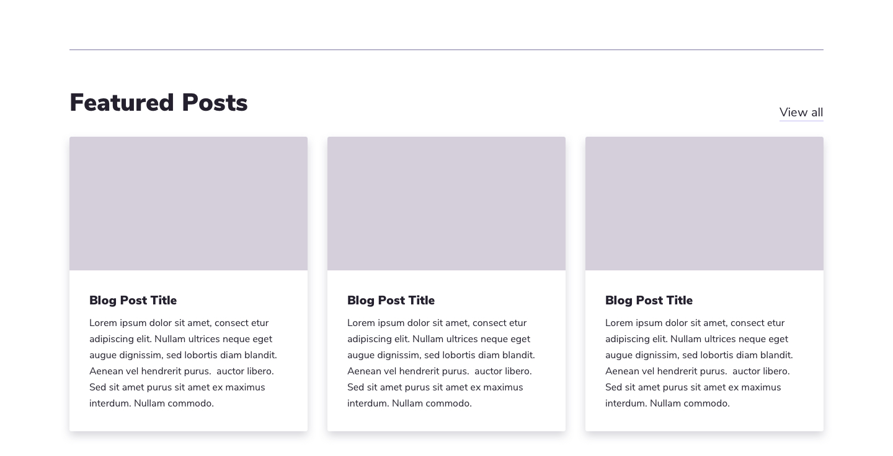
You can manually choose which posts to display by selecting “Yes” from the Manually Choose Listings dropdown menu. From there you use the dropdown menu that appears to select from a list of all your posts. Alternatively, you can type the name of the post for it to appear from the dropdown menu.
To display your most recent posts, select “No” from the Manually Choose Listings dropdown menu. You can then choose to display either 3 or 6 of your most recent posts. You can add a background colour to this block by selecting “Light” from the dropdown menu.
Used for: Adding a Gravity Form to a page.
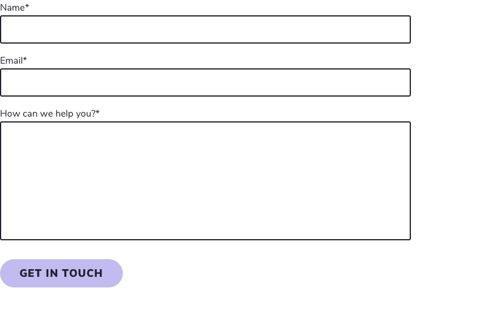
Select a gravity form from the dropdown menu. For a form to appear in this menu, it must first be created. See the Forms section below for more information.
You can add a background colour to this block by selecting “Light” from the dropdown menu.
#contact as the URL. Example: yourwebsite.com/#contactUsed for: Highlighting key features, important points, etc.
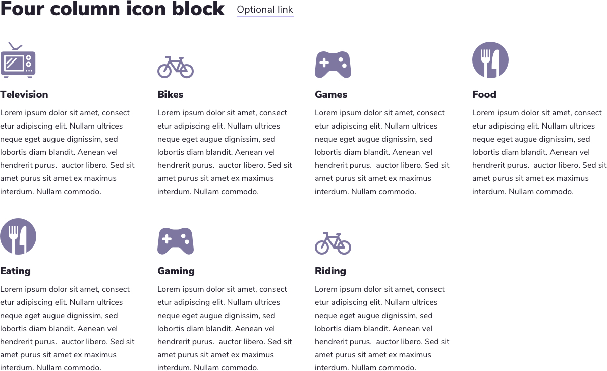
To add more content select the “Add Row” button. To remove a row of content select the - icon to the right of the row. Select “Add Image” to upload an image from your computer or select an image from the media library. To remove an image, hover over the image and select the x icon.
A link can be added next to the heading to drive users to find out more about this content. You can add a background colour to this block by selecting “Light” from the dropdown menu.
Used for: Showcasing images that the user can click through.
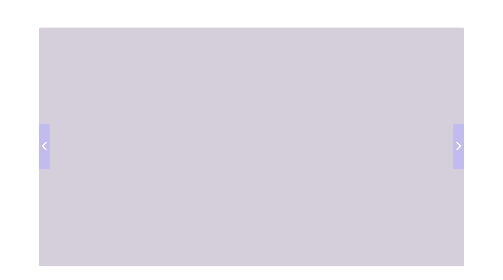
Select the “Add to Gallery” button to upload an image from your computer or select an image from the media library. To remove an image, hover over the image and select the x icon. You can add as many images as you like.
Used for: A full-width image spanning the page.
Select the “Add Image” button to upload an image from your computer or select an image from the media library. To remove an image, hover over the image and select the x icon.
Toggle “Yes” to the Parallax Effect to enable a parallax effect to this image as users scroll by.
Used for: Adding a grid of images and text to a page.
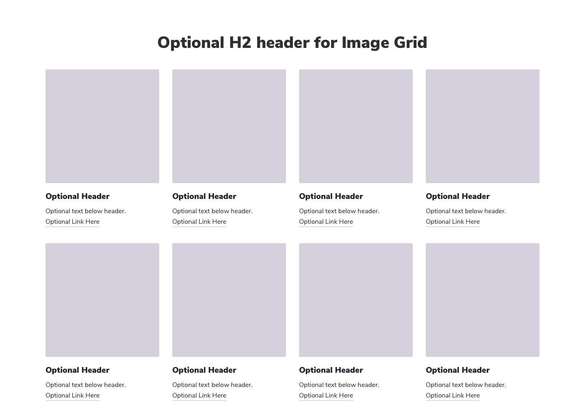
To add more content select the “Add Row” button. To remove a row of content select the - icon to the right of the row.
Choose to align content in this block to the left or centre by selecting from the dropdown menu. You can add a background colour to this block by selecting “Light” from the dropdown menu.
Used for: Adding a large image to the page (but not as impactful as the “full-width image”).
Select the “Add Image” button to upload an image from your computer or select an image from the media library. To remove an image, hover over the image and select the x icon.
Once uploaded, you will see a form on the right side that lets you add details to the image. Here you can add an image caption. If you’d like this caption to display, toggle “Yes” to Show Caption.
Used for: Adding large text to the top of the page to introduce it.
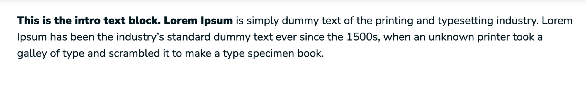
The content editor for this block consists of the visual editor and the text editor. Information on that can be found here.
Used for: Displaying partner or client logos in a scrolling carousel.
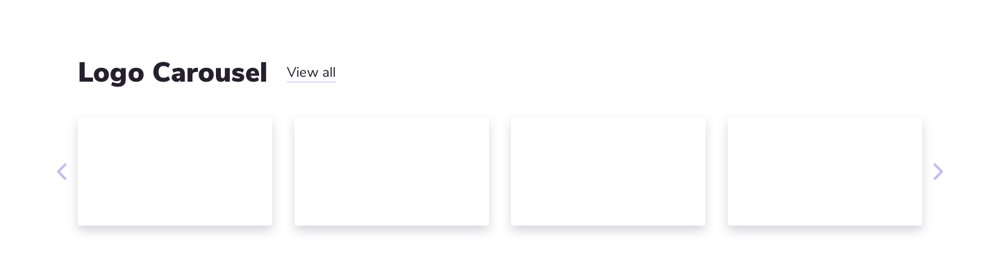
A link can be added next to the heading to drive users to find out more about this content. Each logo card can also be linked.
To add more content select the “Add Row” button. To remove a row of content select the - icon to the right of the row. Select the “Add Image” button to upload an image from your computer or select an image from the media library. To remove an image, hover over the image and select the x icon. You can add a background colour to this block by selecting “Light” from the dropdown menu.
Optional: Add text to the description to have text appear below the image.
Used for: Adding a heading and link to the Table of Contents of a Pillar page.
See Adding a Pillar Page above for full details.
Used for: Text alongside an image in a two-column layout.
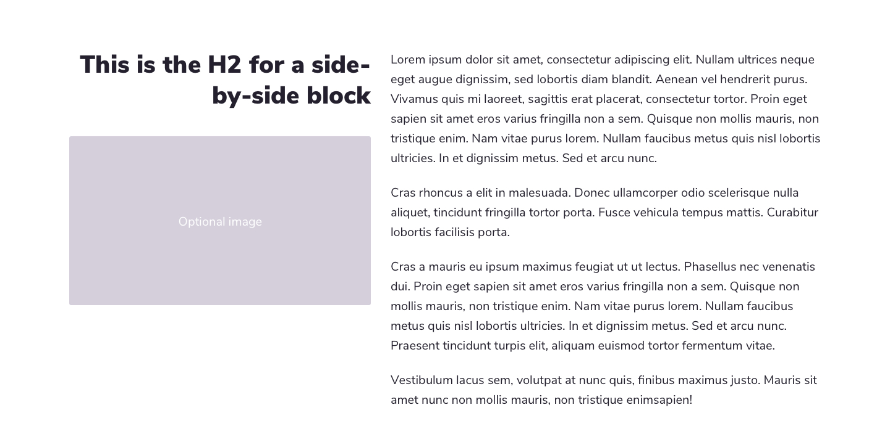
Select the “Add Image” button to upload an image from your computer or select an image from the media library. To remove an image, hover over the image and select the x icon. The image width is fixed, but the height will depend on the orientation of the photo you upload — longer text may be better suited to a taller image, for example!
You can add a background colour to this block by selecting “Light” from the dropdown menu.
Used for: Laying out related concepts, steps, or features with images.
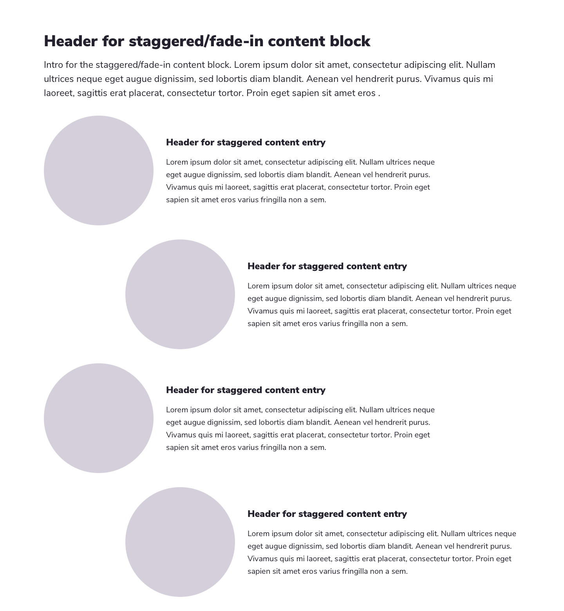
You can add a header and intro text to the block. To add a new row select the “Add Row” button. Reorder the items by dragging and dropping the section you’d like to move.
You can add a background colour to this block by selecting “Light” from the dropdown menu.
Used for: Displaying a TablePress table on the page.
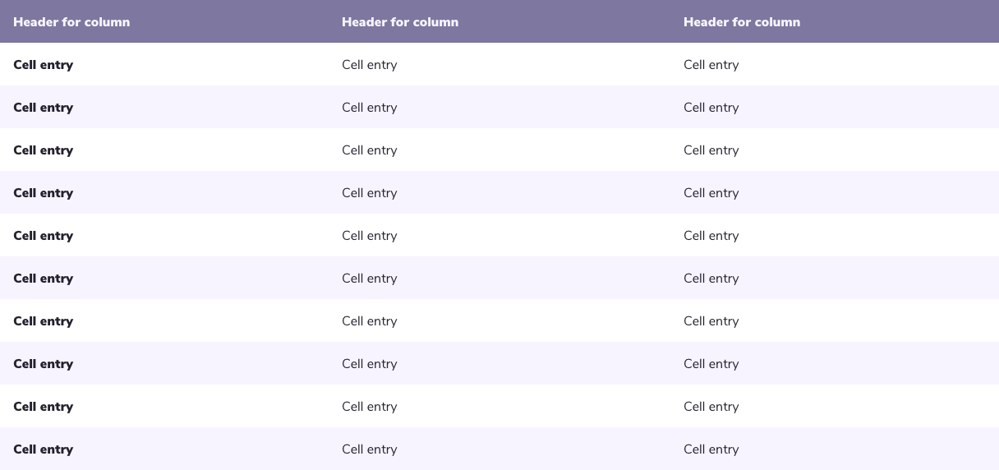
See Adding a Table below for full instructions.
Used for: Automatically adding cards of all members of your team to any page.
This block automatically pulls and displays the team members. Other than the heading, you will not be able to edit this block.
Used for: Adding a client testimonial to the page.
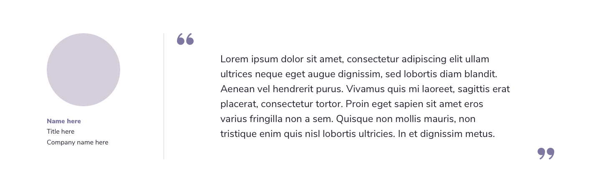
Each testimonial requires a source name (this is the text that appears bold in the image above) and a quote. Both the source description (this is the text that appears below the bold text) and the image are optional. If these fields are left blank, no image or source description will display on the page. To add an image, select the “Add image” button. To remove an image, hover over the image and select the x icon.
You can add a background colour to this block by selecting “Light” from the dropdown menu.
Used for: Adding basic text to the page.
The content editor consists of the visual editor and the text editor.
You can choose the background colour of your CTA by selecting one of the following colours from the dropdown menu: Light (Bright Green), Accent (Bright Green), Primary (Black), or Secondary (Blue).
Used for: Adding basic text with a sidebar of information to the right.
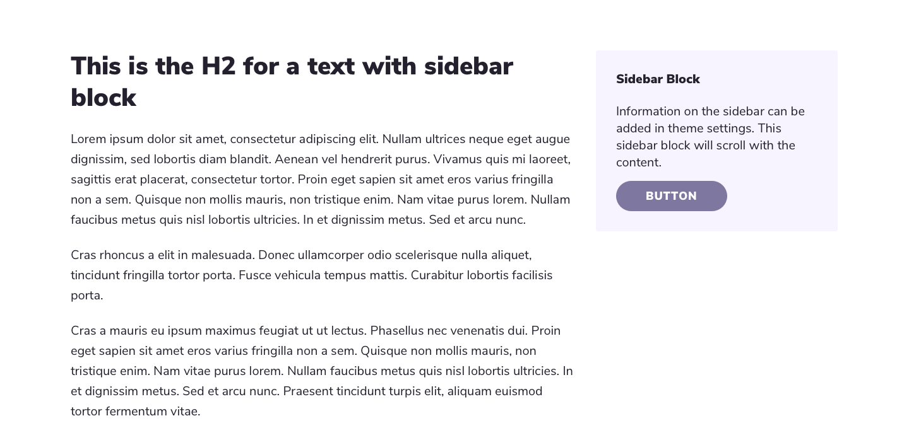
This sidebar will scroll to the bottom of the block as the user scrolls down. The content editor consists of the visual editor and the text editor.
Used for: Showcasing 3 highlights or features with icons or linking to other pages.
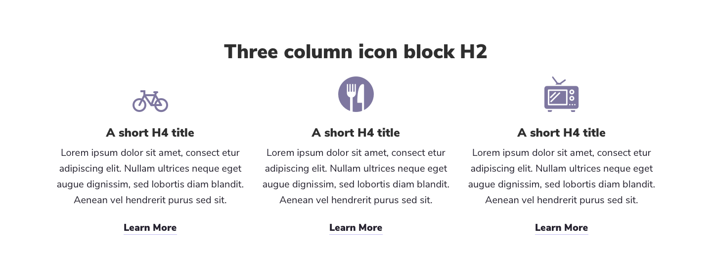
To add more content select the “Add Column” button. To remove a row of content select the - icon to the right of the row. Choose to align content in this block to the left or centre by selecting from the dropdown menu.
Used for: Breaking content into distinct sections without imagery.
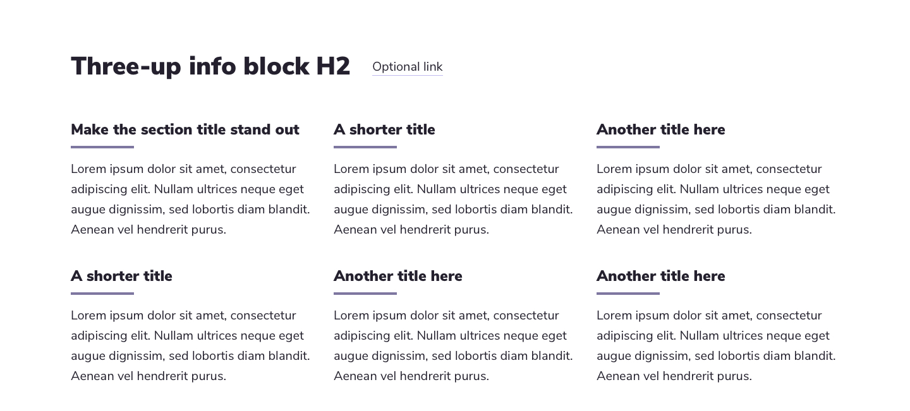
To add more content select the “Add Column” button. To remove a row of content select the - icon to the right of the row. You can add a background colour to this block by selecting “Light” from the dropdown menu.
Used for: Adding an organizational or historical timeline.
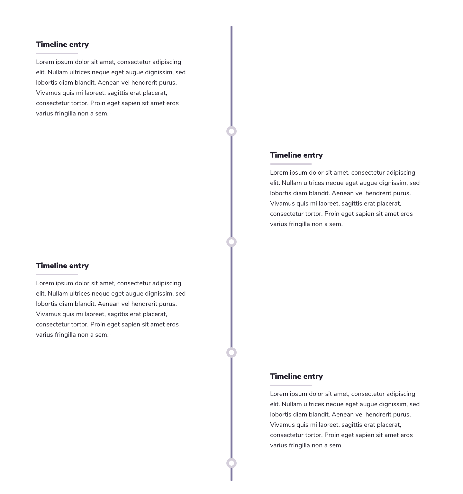
Each item requires an Event Title (heading field) and a Description (text field). To add a new item to the timeline, click on the “Add Row” located at the bottom of this content block. Each item will fade in as the visitor scrolls through the page.
Used for: Adding two columns of text.
Works best for short content where one column contains a list.
Used for: Embedding a YouTube or Vimeo video.
To embed a video on the page, just simply enter the YouTube or Vimeo URL and you’re good to go! You can add a background colour to this block by selecting “Light” from the dropdown menu.
Adding a Table
Your website uses TablePress to create and manage tables. You can add the tables wherever needed using the “table” block.
Creating a New Table
Create and manage tables by going to the “TablePress” screen in the admin menu (pictured below).
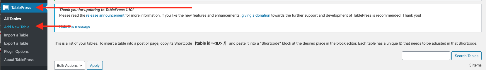
- Go to TablePress → Add New.
- Give the table a name and specify the dimensions of your table (number of rows & columns)
- Start filling out the individual cells of your new table. The interface you use to fill out the table is simple and uncomplicated and is somewhat akin to your average Excel spreadsheet.
- On this page, your table will be assigned an ID and a shortcode you’ll use to add the table to your post or page.
- Further down on the same page, you can find some basic options, like inserting links/images in your cells, duplicating/deleting selected rows and columns, combining cells, alternating colour by row, enabling sorting/pagination, and more.
- The plugin automatically assumes that your first row is the header row for the table, but you do have the option to prevent that and even change the last row to a table footer.
- Click the “Save Changes” button, then the “Preview” button at the bottom of the page to get a basic idea of what your table will look like when inserted in a post or page.
Importing a Table
If you’ve already got your data ready (such as an Excel sheet or Google Sheets document) and waiting to go in an external format, you can import it right into the TablePress plugin.
- Navigate to WP Admin > TablePress > Import a Table
- On this page, you’ll select your import source.
- Once you click the “import table” button, you’ll be redirected to the same editing page as when you created your table from scratch. Except for this time, the table name, description, and content have already been filled in. All that remains to do is customize the options down at the bottom.
Inserting a Table into a Page
To show one of your tables on a page or post, you can do either of the following:
- Use the “table” block and add your table ID.
- Insert [table id=
/] into the intro text or regular text block.
Each table has a unique ID that needs to be adjusted in the content block or the Shortcode. You can find this code by hovering over the TablePress menu and selecting “Show Shortcode”. Grab this code and copy/paste it into the shortcode content block.
Block Settings
Each block has a settings tab that allows you to adjust the block as needed.
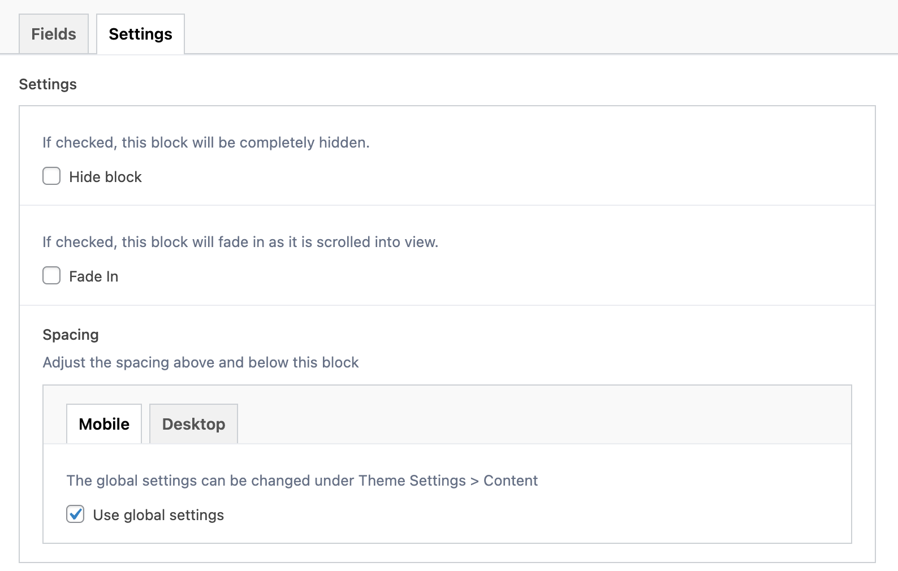
Hide Block
Selecting this will hide this specific block from appearing on the page while also keeping the content in the backend. This is useful when you have information that is not ready to publish but you’d still like to prepare the page.
Fade In
Selecting this will apply a fade-in animation. The block will slowly fade in as the user scrolls down. The block will remain visible if the user scrolls up — it will only fade in once.
Spacing
All blocks have default padding of:
- Desktop: 112px top and bottom
- Mobile: 56px top and bottom
This spacing can be adjusted globally in the Theme Settings. For more information on that, see the Theme Settings section below.
This space can be adjusted as needed by moving the spacing slider by unchecking “Use Global Settings”. If you are going to adjust the space settings, please make sure you adjust the spacing on both desktop and mobile.
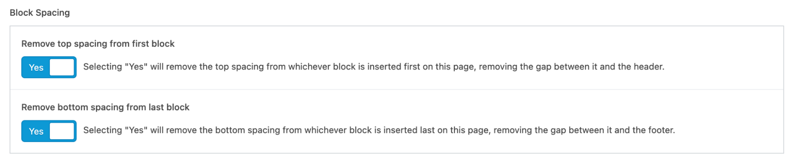
Page Settings
By default, the first and last blocks on the page have the top and bottom spacing removed, respectively. To adjust this, you can toggle the “Remove top spacing from first block” and “Remove bottom spacing from last block” in the Page Settings section below the flex builder. Selecting No will remove the top or bottom spacing for these blocks.
Adding a Button
You can add a button to the text editor of any block by adding this shortcode and adjusting the text in bold below:
- href — Enter the URL you are linking to in between the quotation marks.
- target="_blank" — If you’d like the link to open in a new window enter _blank in between the quotation marks. If you’d like the link to open in the same window enter _self in between the quotation marks.
- Button Text — This is the text that will appear on the button.
Theme Settings
Many aspects of the website are controlled in the theme settings, including your logo, contact information, some footer settings, and your 404 page.
General
This section is where you can:
- Update your site logo
- The background colour of the navigation
- Favicon and breadcrumb icon
- Add your Directions link, Google Maps link, your GTM container ID and Google Maps API key
- The contact information (phone, fax, email, address, directions link, Google My Business map) that displays in your footer and on your contact page dress).
Content
- Optional Footer Text — appears before the copyright line in the footer.
- Sidebar Content — content for the Text With Sidebar block; set background colour to light or dark.
Blocks
Each block has settings that adjust the spacing between blocks on a page. Here you can adjust the Global Block Settings for the site for all pages, posts (blogs), and pillar block pages. You can also adjust the spacing settings for individual blocks.
Colours / Buttons / Fonts
These have been configured per your brand and accessibility guidelines. Do not adjust without consulting us.
Newsletter
If your website uses a newsletter, this is where you can edit the headline that appears above the form in the newsletter drawer.
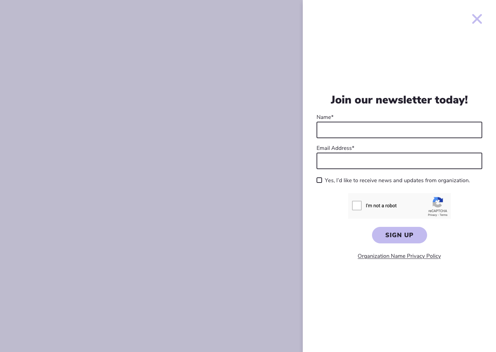
Toggling “Show Newsletter Link” will add a link to this newsletter drawer to the footer of your website. Edit the text that appears in the footer in the Newsletter Text field.
Adding a Link to Newsletter Drawer
If you would like a link to open the newsletter drawer, either a button or text link, simply enter #newsletter as the URL in the Link Pop-Up described above.
Menu
Toggle “Show secondary menu” to show the utility menu. This is the smaller menu that appears above the main navigation, as seen in the screenshot below.
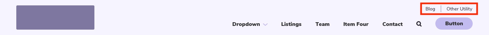
Social Media
Add, remove, or edit social links that appear in the footer. For platforms not in the dropdown, select Other and enter the Font Awesome brand icon name.
Admin
Here you can change the colours of your admin dashboard. These are the colours that appear in the backend of the site while you are editing. This should not be adjusted unless necessary. Ask us for assistance if you need help.
404 Page
The content for your 404-page lives here. You can adjust the image, make content edits, change the text colour (light or dark), and turn on or off the overlay that appears over the image.
Editing the Header & Footer Menus
This area of the site is only available to Administrative users. You can find Menus under Appearance in the left navigation bar.
The Menu section is used to tell the site what to show in the navigation bar and what links to show in the footer. You can add, remove and reorder items from a menu on this screen. All items currently in the menu will appear in the Menu Structure box on the right.
Adding a New Menu
From the 'Appearance' menu on the left-hand side of the Dashboard, select the 'Menus' option to bring up the Menu Editor. From there select the “Create a new menu” text at the top of the page.
Enter a name for your new menu in the Menu Name box and then click the “Create Menu” button. Your new menu has now been created.
Now you need to assign it to a location for this menu to appear on the site.
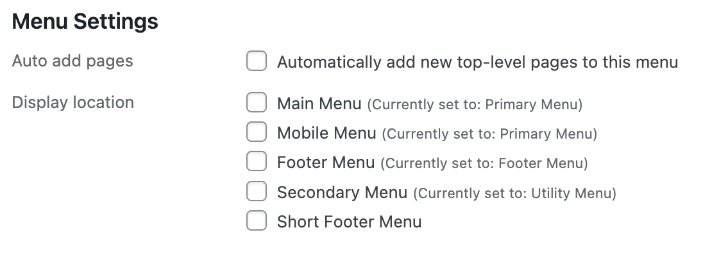
In the section titled Menu Settings, click the check box for the location where you want your menu to appear. Click the “Save menu” button once you've made your selection.
Your Site's Menus
Your site has 4 different menus:
- Main Menu — The Main Menu is the primary menu on the site on both desktop and mobile devices. This should not be adjusted unless necessary. Ask us for assistance if you need help.
- Footer Menu — This menu allows you to change the links in the footer that sit above the Copyright information. It does not allow you to change anything else in the footer.
- Secondary Menu — This is the smaller menu that displays above the main menu on desktop devices. It currently displays the "Call Us" link. This should not be adjusted unless necessary. Ask us for assistance if you need help.
- Short Footer Menu — This menu allows you to change the links in the footer that side to the right of the Copyright information. It does not allow you to change anything else in the footer. .
Adding a New Menu Item
- Select the correct menu to edit.
- Find the page in the Pages list on the left and click Add to Menu.
- Drag the new item to its correct position in the Menu Structure.
Add a Button to the Menu
Select Button from the "Display As" dropdown on any menu item. We recommend placing it as the last item.
Add Search to the Menu
Add a Custom Link with # as the URL, then select Search from the "Display As" dropdown.
Removing a Menu Item
Click the triangle to expand the item → click Remove at the bottom left.
If you remove an item by mistake, you can re-add it from the selections at the left.
Forms
Forms can be created and edited by going to the “Forms” section in the left-hand sidebar. It’s best to let us know before you create a new form so we can ensure your Analytics tracking is set properly for your new form.
- To add a new form, click “add new.”
- Give it a title, a description is not necessary.
- Gravity Forms makes it easy to create new forms and has instructions you can follow on the page itself.
- Make sure you hit “update” when you’re finished adding your fields.
Changing Where Notification Emails Go
- Open the form → Settings → Notifications.
- Edit the existing notification or create a new one.
- In the Send To field, add email addresses separated by commas.
- The “configure routing” option allows you to conditionally send emails based on what choices the visitor made on the form.
- Below this section, you can add a From Name, From Email, Subject and message.
{all_fields} in the message body to receive the full form submission in the notification email.The Configure Routing option lets you conditionally route emails based on what the visitor selected in the form.
Changing Form Confirmations
Confirmations are displayed for the user on the site after they submit the form. They can be edited in the “Confirmations” area of the Settings for a particular form.
You can edit the default confirmation, or add a new one. You can have multiple confirmations if you’d like to use conditional formatting and show users different conformations depending on what they have chosen in their form. You need to have more than one confirmation created for this option to display.
Simply add text into the “message” box and hit save confirmation. Do not use the “redirect” or “page” confirmation type. Always use “text.” Otherwise, tracking will be skewed in Analytics.
Appendix: The Dashboard
The Dashboard is the admin area you access after logging in. Options available depend on your user role.
Admin users may occasionally need to update navigation menus, update contact information, or add a new user. Everything else is managed by a developer.
Appendix: The Content Editor
The WYSIWYG editor appears in blog posts and in many block fields. It has two modes:
Visual Editor
The default view — works like a word processor. Use it to add text, formatting (bold, italic, lists), images, and links. This is where you'll spend most of your time.
Text Editor
The HTML view. Use it to add custom HTML, insert shortcodes, or see what formatting is already applied.
Appendix: The Media Library
Images, SVGs, and PDFs are managed under Media in the left sidebar. Switch between list and grid views using the icons at the upper left.
Uploading Files
Click Add New and drag and drop files, or click Select Files to upload from your computer.
-) not spaces or underscores. Avoid accented characters (ä, è) and special characters (%, ^, *, /).
Adding Alt Text
Alt text is used by screen readers and helps search engines understand image content. Add it when uploading via the Image block (right sidebar), or via Media → Library by clicking the image to edit it.
Appendix: Image Size Guide
Upload the largest size you have — the theme will resize automatically. Keep file sizes under 1 MB.
Optimizing Images Before Upload
Use ImageOptim (Mac). Enable lossy minification and set quality to ~70%. The site's WP Smush plugin will do further optimization after upload. Always keep a backup of the original before running ImageOptim.
| Image | Format | Minimum (px) | Ideal (px) | Ratio |
|---|---|---|---|---|
| Big Banner — Desktop | JPG | 1440 × 720 | 2880 × 1440 | 2:1 |
| Big Banner — Mobile | JPG | 780 × 1560 | 1560 × 3120 | 1:2 |
| Small Banner — Desktop | JPG | 1440 × 480 | 2880 × 960 | 3:1 |
| Small Banner — Mobile | JPG | 1170 × 780 | 1560 × 2340 | 2:3 |
| Accordion Block | JPG | 768 wide | 1536 wide | — |
| Feature Block | JPG | 500 wide | 1000 wide | — |
| Featured Blog Post | JPG | 768 × 432 | 1536 × 864 | 16:9 |
| Four Icon Block | SVG | 72 × 72 | 72 × 72 | 1:1 |
| Full-Width Image | JPG | 1440 × 810 | 2880 × 1620 | 16:9 |
| Gallery | JPG | 1440 × 810 | 2880 × 1620 | 16:9 |
| Image CTA Block | JPG | 1440 × 810 | 2880 × 1620 | 16:9 |
| Image Carousel | PNG | 280 × 158 | 560 × 315 | 16:9 |
| Image Grid | JPG | 500 × 500 | 1000 × 1000 | 1:1 |
| Large Image | JPG | 1440 wide | 2880 wide | — |
| Listings Thumbnail | JPG | 1440 × 810 | 2880 × 1620 | 16:9 |
| Product Image | JPG | 500 wide | 1000 wide | — |
| Side By Side Block | JPG | 768 wide | 1536 wide | — |
| Staggered Fade-In (auto-crops to circle) | JPG | 500 × 500 | 1000 × 1000 | 1:1 |
| Team Member | JPG | 500 × 500 | 1000 × 1000 | 1:1 |
| Three-Column Icon Block | SVG | 72 × 72 | 72 × 72 | 1:1 |
| 404 Page — Desktop | JPG | 1440 × 720 | 2880 × 1440 | 2:1 |
| 404 Page — Mobile | JPG | 780 × 1560 | 1560 × 3120 | 1:2 |
| Facebook OG | JPG | 1200 × 630 | 1200 × 630 | — |
| X (Twitter) OG | JPG | 1200 × 675 | 1200 × 675 | — |
Appendix: Title Tags & Meta Descriptions
Page Titles
Be compelling and include your target keyword(s). Keep titles between 40–60 characters so Google doesn't truncate them. Use Title Case. Use Moz's Title Tag Preview Tool to preview how your title will appear in search results.
Meta Descriptions
Don't directly affect rankings, but a well-written description improves click-through rates. Guidelines:
- Under 300 characters
- Include what the page offers and a call to action
- Unique for every page
- Active voice; include keywords naturally
Determining Keywords
- Think about what someone would Google to find this specific page.
- Search those terms and study the top results. What are they doing well?
- Check "Searches related to…" at the bottom of the Google results page for additional keyword ideas.
- Weave keywords naturally into the title and page content — don't force awkward phrasing.
- Target different keywords on different pages. Don't compete against yourself.
Appendix: Adding Users
Found under Users in the left sidebar. Administrative access only.
Creating a New User
- Go to Users → Add New.
- Choose a username — this is permanent and cannot be changed later.
- Enter the user's email address.
- Select Editor from the Role dropdown (unless you have a specific reason to assign a higher role).
- Leave Send User Notification checked so they receive login instructions.
- Click Add New User.
Removing a User
- Hover over the user's name on the Users page → click Delete.
- On the Delete User screen, assign their content to another user before confirming.
Appendix: Adding Links By Hand
For text fields without a formatting toolbar, write links using HTML:
Email Link
Phone Number Link
No spaces or dashes in the number. Include the country code (+1) for calls from outside your area.
Appendix: Adding Redirects
Redirects are managed under Tools → Redirection.
Redirect a Removed Page
- In Add New Redirection, enter the removed page's path in Source URL.
Example: strip the domain fromhttps://yoursite.com/case-studies/→ enter/case-studies/ - Enter the full destination URL in Target URL.
- Click Add Redirection.
Redirect for an Updated Permalink
When you change a page's slug, the Redirection plugin creates the redirect automatically.
Vanity URL Redirect
The Source URL doesn't have to be a real page — just make sure it doesn't conflict with an existing URL.
Prepared by Kick Point for Bin There Dump That · Last Updated: August 2026